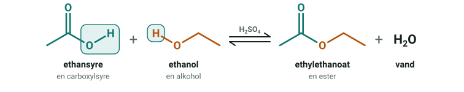
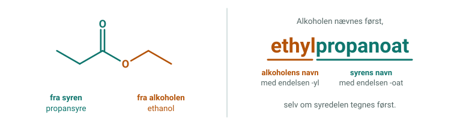
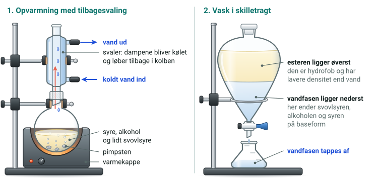

En ester dannes ved en kondensation af en carboxylsyre og en alkohol. Syren afgiver sin OH-gruppe, og alkoholen afgiver hydrogenatomet fra sin OH-gruppe. De danner vand, og de to molekyldele, der er tilbage, bindes sammen. Reaktionen er en ligevægt, og koncentreret svovlsyre er katalysator.

R−COOH + R′−OH ⇌ R−COO−R′ + H₂O
Esterens navn
Alkoholdelen står først med endelsen -yl, og syredelen står bagefter med endelsen -oat. Syredelen er den del, der har C=O, og alkoholdelen sidder på det enkeltbundne oxygenatom.

Rens esteren
Blandingen rystes i en skilletragt. Vand tager svovlsyren og det meste af den overskydende alkohol. Natriumcarbonat gør resterne af carboxylsyren til baseformen, som opløses i vandet, og der dannes carbondioxid. Esteren har intet H på oxygen og en lavere densitet end vand, så den bliver i det øverste lag.

123 fane · Enter indsend svar · CO grundstof på tavlen · R forfra · H rundvisning · T teori · Esc luk